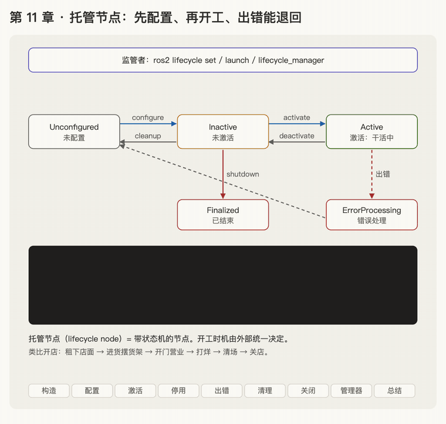

第 11 章 · 时间与托管节点（lifecycle）
本章回答：仿真跑得比真实时间快或慢时，节点里的"现在几点"听谁的？回放 bag 时为什么要设
use_sim_time？一个驱动节点怎么做到"先配置好、确认没问题再开始干活、出错能退回去"？
讲解日期：2026-11-13 · 上一章：第 10 章 组合、进程内通信与零拷贝 · 下一章：第 12 章 tf2 坐标变换
对应原文：design/articles/130_ros_time.md；design/articles/node_lifecycle.md（Primary States）；ros2_documentation/source/ROS-Framework/nodes/Working-with-nodes/Managed-Nodes.rst（路径相对ros2/materials/）
对应 study-plan 阶段 C6、C7，动手里程碑 R-M5（lifecycle 节点 + launch 事件 + 测试）。
本章缩写：/clock（不是缩写，仿真时间话题）；sim time = simulation time（仿真 / 时间）；NTP = Network Time Protocol（网络 / 时间 / 协议：校准电脑时钟）；PTP = Precision Time Protocol（精确 / 时间 / 协议：比 NTP 更准的时钟同步）；FSM = Finite State Machine（有限 / 状态 / 机）。全部缩写见 附录 · 缩写与术语表
本章先看总图，再分 3 步：
| 步 | 内容 | 状态 |
|---|---|---|
| 0 | 总图：托管节点的四个主状态和转换 | ✅ |
| 1 | 三种时钟与仿真时间 | ✅ |
| 2 | 托管节点：状态、转换、回调 | ✅ |
| 3 | 用起来：命令行、生命周期管理器、Nav2 的做法 | ✅ |
讲解
总图 · 托管节点的状态机

可交互版：animations/11-lifecycle.html（内置浏览器：http://localhost:8340/11-lifecycle.html）。
类比：开店。 店面租下来了（未配置 Unconfigured）→ 进货、摆货架、调好设备（配置 configure → 未激活 Inactive）→ 开门营业（激活 activate → Active）→ 打烊（停用 deactivate → 回到 Inactive，货还在，明天可以直接开门）→ 清场（清理 cleanup → 回到 Unconfigured）→ 关店（shutdown → Finalized）。
第 1 步 · 三种时钟与仿真时间
依据：materials/design/articles/130_ros_time.md（下称"时间设计"）。
ROS 2 提供三种时钟，对应 C++ 标准库的两种时钟再加一种（时间设计 "Clocks" 一节）：
| 时钟 | 是什么 | 会不会跳 | 用途 |
|---|---|---|---|
| SystemTime 系统时间 | 电脑的墙上时钟 | 会（NTP 校时、手动改） | 打时间戳、和外部世界对表 |
| SteadyTime 稳定时间 | 开机后单调递增的计时 | 不会倒退 | 测"过了多久"、硬件超时 |
| ROSTime ROS 时间 | 默认等于系统时间；开了仿真时间后等于 /clock 话题上的时间 |
会（仿真暂停、bag 回放可往回跳） | 节点里的默认时钟 |
仿真时间怎么工作（时间设计 "ROS Time Source"）：
- 仿真器（Gazebo 等）或
ros2 bag play --clock往/clock话题发布"现在是仿真里的几点几分"； - 节点的参数
use_sim_time设为true（第 2 章看到每个节点都有这个参数）； - 这个节点的 ROS 时间就跟着
/clock走：仿真跑快，节点的时间就快；仿真暂停，时间就停。定时器也按 ROS 时间触发。
为什么需要它？ 仿真可能比真实时间快（批量测试）或慢（物理很复杂）（时间设计开头）。如果节点用墙上时钟，"每 0.1 秒发一次指令"在慢 10 倍的仿真里就变成"仿真时间每 0.01 秒一次"，控制完全乱套。回放 bag 也一样：数据的时间戳是录制时的，节点要按 bag 里的时间运转。
最常见的坑：系统里有的节点设了 use_sim_time、有的没设。一半节点活在 bag 的时间里、一半活在现在，tf2 会报"变换在过去 / 未来"（第 12 章），消息同步全部失败。Lyrical 新增 ros2 param get <参数名> 一次查所有节点的同一个参数，正好用来检查这件事（Release-Lyrical-Luth.rst 对应一节）。
代码里：self.get_clock().now() 拿 ROS 时间；要测执行耗时、做超时，用稳定时钟（Python 里 time.monotonic()，或 rclpy.clock.Clock(clock_type=ClockType.STEADY_TIME)）。多台电脑之间的时间戳要可比，还要用 NTP / PTP 把各机时钟对齐（第 15 章会提硬件时间同步）。
第 2 步 · 托管节点：状态、转换、回调
依据：materials/design/articles/node_lifecycle.md（下称"生命周期设计"）、ROS-Framework/nodes/Working-with-nodes/Managed-Nodes.rst。
为什么要托管节点（managed node / lifecycle node）？ 普通节点一构造就开始工作。可真实系统需要：
- 驱动先连上硬件、确认参数没问题，再开始发数据；
- 一组节点都准备好了才一起开工（导航不能在地图还没加载时就开始规划）；
- 出错时能退回到安全状态重新配置，而不是只能杀掉重启。
四个主状态（生命周期设计 "Primary States"）：
| 状态 | 意思 | 这时节点在干什么 |
|---|---|---|
| Unconfigured 未配置 | 刚构造完，或出错后退回来 | 什么都没有，不应保存任何状态 |
| Inactive 未激活 | 配置好了但没开工 | 不处理话题、不响应功能性服务请求；可以安全地改配置 |
| Active 激活 | 正常工作 | 处理数据、发布、响应请求 |
| Finalized 已结束 | 即将销毁 | 只等被销毁 |
六个过渡状态：Configuring、CleaningUp、Activating、Deactivating、ShuttingDown、ErrorProcessing。它们是转换进行中的中间态，各自对应一个你要写的回调。
转换与回调：
| 转换 | 从 → 到 | 你写的回调 | 该做什么（按 Nav2 的约定） |
|---|---|---|---|
| configure | Unconfigured → Inactive | on_configure |
读参数、创建发布者 / 订阅者 / 服务、分配内存、连硬件 |
| activate | Inactive → Active | on_activate |
激活发布者、开始处理 |
| deactivate | Active → Inactive | on_deactivate |
停止处理（硬件不断开） |
| cleanup | Inactive → Unconfigured | on_cleanup |
释放 configure 时申请的一切 |
| shutdown | 任意主状态 → Finalized | on_shutdown |
收尾退出 |
| （出错） | Active 里出现无法处理的错误 → ErrorProcessing | on_error |
处理成功回到 Unconfigured，失败到 Finalized |
除了 Active 里出错，其余状态变化都要外部"监管者"下令（生命周期设计 "Primary States" 开头）。节点自己不会从 Inactive 跳到 Active。这正是它的价值：开工的时机由系统统一决定。
Nav2 的约定（ecosystem/docs.nav2.org/docs/getting_started/navigation_concepts/ros2.md "Lifecycle Nodes and Bond"）：构造函数里不要做任何 ROS 网络设置和参数读取，全部放到 on_configure；on_activate 里激活网络接口、开始处理。
发布者也是"托管"的：托管节点里创建的是生命周期发布者，节点不在 Active 时调用 publish 不会真的发出去。
C++ 和 Python：C++ 用 rclcpp_lifecycle::LifecycleNode；Python 用 rclpy.lifecycle.Node（Managed-Nodes.rst 链接的 lifecycle_py 示例）。
第 3 步 · 用起来
命令行（ros2 lifecycle）：
ros2 lifecycle nodes # 列出所有托管节点
ros2 lifecycle get /lc_talker # 当前状态，如 unconfigured [1]
ros2 lifecycle list /lc_talker # 当前能做哪些转换
ros2 lifecycle set /lc_talker configure
ros2 lifecycle set /lc_talker activate # 这之后 lc_talker 才开始发消息
（底层是每个托管节点自带的 ~/change_state、~/get_state 等服务和 ~/transition_event 话题。）
谁来下令？ 两种方式：
- launch 文件：用
LifecycleNode动作启动节点，再配合事件处理器，"某节点进入 Inactive 后，自动发 activate"（第 14 章 launch 进阶）。 - 生命周期管理器：Nav2 自带
lifecycle_manager，按列表依次把一串节点 configure → activate；任何一个失败就停下。它还通过 bond（心跳连接）盯着每个服务端：某个服务端崩了，管理器知道后把整个系统有序地降下来，防止出现严重故障（Nav2 文档同一节）。
官方建议：能用托管节点的地方都用（Nav2 文档："It is best convention for all ROS systems to use lifecycle nodes if it is possible"）。ros2_control 的硬件组件也有同样一套生命周期（第 16 章）。
和本仓库的连接：VLA 策略节点也适合做成托管节点：on_configure 加载模型权重、预热 GPU；on_activate 才开始订阅图像、输出动作；出问题 deactivate，机器人停在安全姿态，不必重新加载几 GB 的权重。
练习与作答记录
练习 11-1（第 1 步）：你用 ros2 bag play 回放一段 10 分钟前录的数据，检测节点的输出时间戳却是"现在"。缺了哪两样设置？
- 作答：（待作答）
练习 11-2（第 1 步）：测"一次推理花了多少毫秒"，用 ROS 时间还是稳定时间？为什么？
- 作答：（待作答）
练习 11-3（第 2 步）：一个相机驱动做成托管节点。下面四件事分别放进哪个回调：打开 USB 设备、读分辨率参数、开始发布图像、关闭 USB 设备？
- 作答：（待作答）
练习 11-4（第 3 步）：托管节点停在 Inactive 时，别人调用它的功能性服务会怎样？为什么这样设计？
- 作答：（待作答）
口诀
- 三种钟：系统钟会跳，稳定钟不倒退，ROS 钟听
/clock。 - 仿真时间：全体
use_sim_time，一个都不能漏。 - 四主态：未配置、未激活、激活、已结束；配置、激活、停用、清理、关闭五种转换。
- 分工：构造函数什么都不做；configure 准备好，activate 才开工；转换听外部指挥。
本章复习卡片编号
R28–R29，见 ../review.md。
附录 · 延伸阅读
留给以后深入学习用，不影响本章主线。★ 是建议先读的。
materials/指ros2/materials/；不带前缀的路径在materials/ros2_documentation/source/下（design/、ecosystem/开头的在materials/下）；...表示省略了和上一条相同的目录。
推荐阅读
| 读什么 | 读哪里 | 读它为了什么 |
|---|---|---|
★ 130_ros_time.md |
materials/design/articles/130_ros_time.md |
三种时钟、/clock、时间跳变通知的设计。 |
★ node_lifecycle.md |
materials/design/articles/node_lifecycle.md |
完整状态机图、每个状态和转换的语义、管理接口。 |
Managed-Nodes.rst |
ROS-Framework/nodes/Working-with-nodes/Managed-Nodes.rst |
托管节点示例的入口（lifecycle / lifecycle_py demo）。 |
★ ros2.md |
materials/ecosystem/docs.nav2.org/docs/getting_started/navigation_concepts/ros2.md "Lifecycle Nodes and Bond" |
工程实践中的生命周期约定和 bond 心跳。 |
Using-Event-Handlers.rst |
Developer-Tools/Launch/Using-Event-Handlers.rst |
launch 里监听状态变化、自动推进生命周期（第 14 章）。 |
Release-Lyrical-Luth.rst |
Releases/Release-Lyrical-Luth.rst "ros2 param get a parameter from all nodes" |
检查全系统 use_sim_time 是否一致。 |
数学原理
- 时间缩放：仿真速度是真实的 \(s\) 倍时，ROS 时间里周期 \(T\) 的定时器在真实时间里每 \(T/s\) 触发一次。
公式清单
| 公式 / 规则 |
|---|
| configure：未配置 → 未激活；activate：未激活 → 激活；deactivate、cleanup 反过来 |
代码对照：把本章的数字用代码算一遍
纯 Python 模拟，不需要 ROS 2（原因见第 1 章这一节）。代码在仓库本地
ros2/solutions/chapter-code/ch11_time_lifecycle.py，配套测试tests/test_ch11_15.py；同名 notebook 在notebooks/ch11_time_lifecycle.ipynb（讲解和代码放在一起，一格一格跑）。Mac 上直接能跑：
bash cd ros2/solutions/chapter-code uv run python ch11_time_lifecycle.py # 一步一步打印 uv run pytest tests/test_ch11_15.py
讲义 ↔ 代码：
| 讲义 | 规则 / 数字 | 写法 | 跑出来 |
|---|---|---|---|
| 第 1 步 仿真时间 | 定时器按 ROS 时间触发 | timer_fire_wall_times(0.1, 0.1, 3.0) |
真实 1.0、2.0、3.0 秒各触发一次 |
| 同上 | 仿真和真实一样快 | timer_fire_wall_times(0.1, 1.0, 0.3) |
0.1、0.2、0.3 秒 |
| 第 2 步 状态机 | configure → activate → … | node.trigger(...) |
on_configure … on_shutdown 依次调用 |
| 第 2 步 托管发布者 | 不在 active 时不发 | node.publish(...) |
只有 #2 真的发出去 |
| 第 2 步 外部下令 | 不能跳步 | trigger('activate') 于 unconfigured |
报错 |
关键几行：
k * period_sim / sim_speed # 第 k 次触发在真实时间的哪一秒
TRANSITIONS = {("unconfigured", "configure"): "inactive",
("inactive", "activate"): "active", ...}
if self.state != "active": return False # 生命周期发布者：没激活不发
代码里才看得到的 3 件事：
- 只模拟了主状态：真托管节点在两个主状态之间还有过渡状态（Configuring、Activating……），回调就在过渡状态里执行；这里把"进过渡状态 → 调回调 → 成功到新主状态"压成了一步。
- 出错那条路（ErrorProcessing）没写：讲义第 2 步的表里有，模拟里省掉了。
- 仿真速度 0.1 表示仿真里过 0.1 秒、真实要过 1 秒，所以 0.1 秒周期的定时器在真实里每秒才触发一次。
自己改一改（不影响练习答案）：
- 把
sim_speed改成 2.0（仿真比真实快一倍），看真实 1 秒里触发几次； - 在
TRANSITIONS里找一找：active 状态能直接 cleanup 吗？用available_transitions()验证。